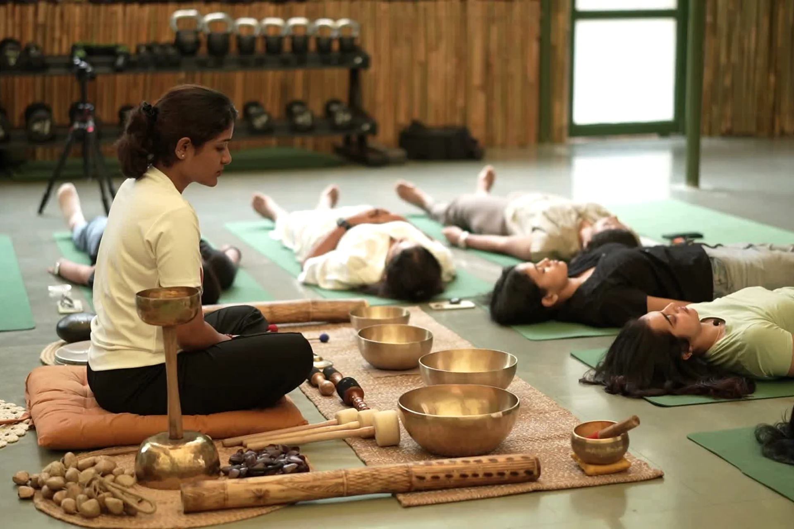

01 / THE SPHERE EXPERIENCE
Move & Reconnect
Yoga, functional movement, traditional practices and mindful ways of reconnecting with the body.
Explore this experience

01 / THE SPHERE
For women who do a lot, carry a lot,
and deserve a little room to simply be.
The Sphere is an intimate women’s wellness club in Coimbatore. We come together through movement, moments of stillness, and conversations that go beyond small talk.
Our philosophy
BEYOND EVERY ROLE YOU HOLD
A place where you don’t have to perform,
achieve or keep up. You simply arrive.
02 / THE SPHERE EXPERIENCE
Begin with your body. Make room for stillness.
Leave with a conversation you carry home.
01 / THE SPHERE EXPERIENCE
Yoga, functional movement, traditional practices and mindful ways of reconnecting with the body.
Explore this experience
02 / THE SPHERE EXPERIENCE
Sound healing, meditation, breathwork and experiences designed to quiet the noise.
Explore this experience
03 / THE SPHERE EXPERIENCE
Honest, thoughtful conversations on womanhood, ambition, relationships, identity and the realities of modern life.
Explore this experience
04 / THE SPHERE EXPERIENCE
Immersive experiences that invite you to explore something new.
Explore this experience
05 / THE SPHERE EXPERIENCE
Intimate gatherings designed to build genuine relationships among like-minded women.
Explore this experienceTHE WOMEN OF THE SPHERE
Founders. Creatives. Mothers. Professionals.
Women building lives they are proud of.
What brings us together isn’t what we do.
It’s how we choose to live.
Curious. Intentional. Open. Evolving.


03 / A PRIVATE CIRCLE
For women who value privacy, meaningful connection
and thoughtfully curated experiences.
A small circle. A monthly rhythm.
A personal conversation first.
04 / THE SPHERE JOURNAL
Reflections on modern womanhood.
Something to take a moment with.
WELLNESS IN YOUR INBOX
Early word on gatherings, gentle reminders to pause, and the occasional note from the circle. Sent rarely. Never shared.
This is the inbox list, not a membership application. Joining it asks us to email you about The Sphere; one line back and we stop.
Looking to join the club itself? Request an invitation